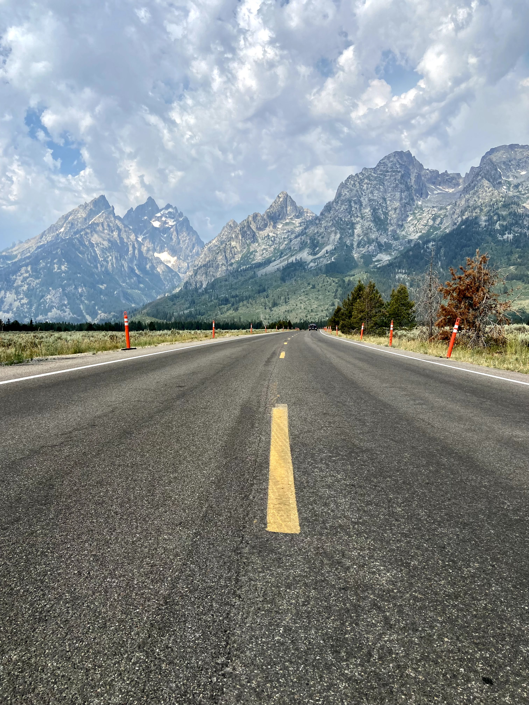

What do I do for fun?
How do I enjoy spending my free time?
When I'm not working, I enjoy spending time with my friends and family, whether that be a fun night out or a lazy night in watching movies or binging TV shows. I'm an active person who enjoys going to the gym and playing sports like soccer, basketball, and recently pickleball. While these activities occupy about 80% of my time, there are a few things I love doing more than anything else that remind me of the beauty of life and to not take it so seriously all the time:
Spending time in Nature
Growing up in Knoxville, TN I spent a lot of my time in the Great Smoky Mountains where I learned to love hiking, camping, and all things outdoors. I've had the opportunity to travel to various National Parks in the United States including Yellowstone, the Grand Tetons, the Rockies, and hopefully many more in the near future.

Reading
When I was young I loved to read, but as I got older my time became occupied with school and sports and I started to deprioritize reading. Recently, I've rediscovered my love of books and you'll find me at various coffeeshops around Atlanta with a book and a cup of coffee. Check out my Goodreads profile to see some of the books I've read. Let me know if you have any recommendations!

Traveling
I've had the privilege of traveling to various countries growing up. To me, immersing yourself in various cultures and learning about the histroy of the world is an important part of being human. My favorite place I've traveled to is Machu Picchu in Peru, but there's still lots of the world I have yet to see.